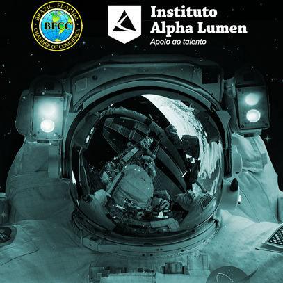
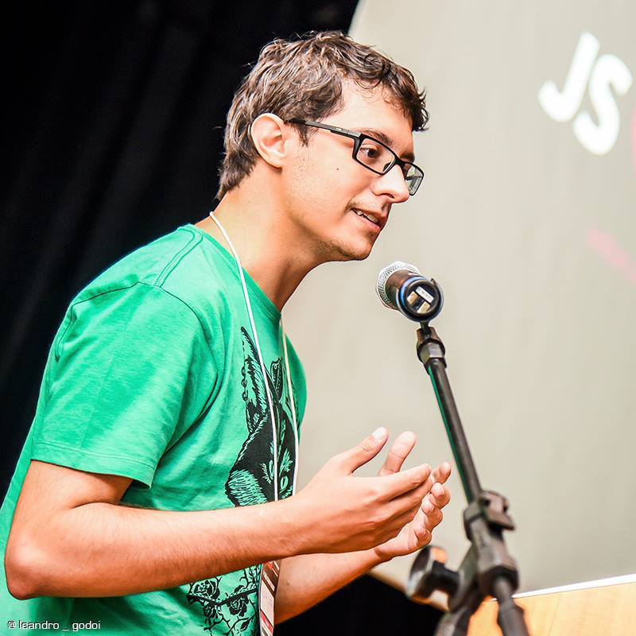

Sobre
O Python User Group do Vale do Paraíba (PUG-Vale) é uma iniciativa comunitária que tem o objetivo de reunir os desenvolvedores e demais interessados na linguagem de programação Python e em suas tecnologias associadas.
A terceira edição aconteceu em 2017, e o intuito é retomarmos os encontros agora com certa frequência.
Através de palestras, painéis de debates e networking buscamos difundir a tecnologia Python na região do Vale do Paraíba, que tem um potencial imenso de desenvolvimento tecnológico.
Ajude-nos na divulgação e até o evento!
Localização
CEFE (Centro de Formação do Educador)
Av Olivio Gomes, 250. São José dos Campos, SP
Palestrantes
-
10:20 às 11:00 Hydrogen - Live programing com Python
Diogo Felix
SiteOps na Quero Educação(startup que criou o Quero Bolsa), possui uma paixão por interfaces minimalistas, assuntos de tecnologia(todos que não envolvam XML) e pode ser encontrado por aí mexendo em código alheio.
-

11:00 às 12:00 Intervalo: Palestra Nasa
Intervalo: Palestra Nasa - George Francis
Diretor e engenheiro na Kennedey Space Center (KSC) da NASA. Engenheiro e diretor de engenharia para o Comando de Operações Especiais da Força Aérea dos EUA.
-
13:30 às 14:10 Minha jornada após o 1º Django Girls SJC
Kátia Nakamura
Kátia é bacharel e mestre em Ciência da Computação pelo Instituto de Ciência e Tecnologia da Universidade Federal de São Paulo e trabalhou por quase 5 anos como Dev Java antes de conhecer o Python. Ama viajar e conhecer pessoas, culturas e lugares pelo mundo! Também adora fotografia e faz do Instagram o seu diário fotográfico.
-
14:15 às 14:55 A Lente de Aumento do Medo
Silvana Elisabete
-
15:15 às 15:55 Fico ou não fico no Brasil? Quais são as minhas chances por aqui?
Paulo Moura
Formado em Sistemas de Informação e pós graduado em Gerenciamento de projetos pela FIAP, 16 anos no mercado de tecnologia atuou nas maiores consultorias como Deloitte, IBM, Accenture entre outras em mais de 30 projetos globais e de grande expressão no território nacional.
-

16:00 às 16:40 Git, Github e Open Source: por que são tão importantes na vida de um dev?
Willian Justen
Desenvolvedor Front-end na Toptal, escritor de blog nas horas vagas e instrutor de cursos na Udemy com mais de 30 mil alunos. Apaixonado por tecnologia e compartilhamento de conhecimento, nos últimos tempos se dedicou a criação de cursos, discussões sobre trabalho remoto e fotografia, onde acabei ganhando prêmio de fotógrafo de 2017 pelo Unsplash.
Agenda
| Horário | Palestrante | Descrição |
|---|---|---|
| 9:40 às 10:00 | Credenciamento | - |
| 10:00 às 10:20 | Abertura oficial | - |
| 10:20 às 11:00 | Hydrogen - Live programing com Python | Esta palestra tem como objetivo mostrar uma nova ferramenta que talvez mude tua forma de atacar e explorar pequenos problemas: o Hydrogen. O Hydrogen é uma integração do Jupyter/IPython dentro do Atom, mas não se engane, ele foi baseado nas ídeias de programação interativa da palestra 'Inventing on Principle' do Bret Victor, possui ótimo suporte a diversas bibliotecas como Pandas, Matplotlib, Plotly entre outras. Ele também não é limitado apenas a linguagem Python, inclusive você pode rodar diversas linguagens no mesmo arquivo, além de outras funcionalidades. Será um live-code aonde irei implementar um crawler(usando splinter/selenium, requests e beautifulsoup), mexer com Pandas e usar algumas bibliotecas para demonstrar o potencial do Hydrogen. |
| 11:00 às 12:00 | Intervalo: Palestra Nasa | STEM: Science, technology, engineering and mathematics. Para jovens, crianças e toda a família! |
| 12:00 às 13:30 | Intervalo: Almoço | - |
| 13:30 às 14:10 | Minha jornada após o 1º Django Girls SJC | O 1º Django Girls São José dos Campos aconteceu junto com a Python Brasil [11] em Novembro de 2015. Foi nesse final de semana que conheci pessoas incríveis e um framework que mudaria o rumo da minha vida. Gostaria de compartilhar a minha jornada até aqui, as experiências e os grandes desafios. :) |
| 14:10 às 14:15 | Pausa para a troca de palestrante | - |
| 14:15 às 14:55 | A Lente de Aumento do Medo | - |
| 14:55 às 15:15 | Intervalo: Coffee Break | - |
| 15:15 às 15:55 | Fico ou não fico no Brasil? Quais são as minhas chances por aqui? | Vamos voltar um pouco ao passado e dar uma olhada na evolução tecnologica passando por cases de sucesso que hoje ultrapassam bilhões de dólares. Entenda como o Brasil esta posicionado ao mercado mundial e como esta a nossa economia nesse exato momento. Responda as seguintes perguntas: - Será que pego minhas coisas e vou embora do país? - Será que é o momento exato para investir por aqui? - Como me posicionar no mercado? |
| 15:55 às 16:00 | Pausa para a troca de palestrante | - |
| 16:00 às 16:40 | Git, Github e Open Source: por que são tão importantes na vida de um dev? | Nessa palestra eu pretendo falar um pouco sobre o que são essas palavrinhas, como funcionam e um pequeno guia sobre esse mundo maravilhoso. |
| 16:40 às 17:00 | Sorteios | - |